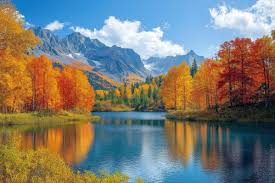

Bangalore – The Garden City
My visit to Bangalore was all about the fast-paced city life mixed with green spaces. I loved exploring the cafes in Indiranagar, the buzz of MG Road, and the calm of Cubbon Park. The weather and the tech vibe of the city made it feel modern yet welcoming.

Mysore – City of Palaces
Mysore felt like walking through history. The Mysore Palace was breathtaking, especially when lit up in the evening. I also visited Chamundi Hills and the local markets filled with sandalwood crafts and Mysore Pak. The heritage and cleanliness of the city really stood out.

Tirupati – A Spiritual Journey
The trip to Tirupati was a deeply peaceful and spiritual experience. The climb to Tirumala, the darshan at the Venkateswara Temple, and the overall devotion of the place left a lasting impact on me. The prasadam and the view from the hills were unforgettable.